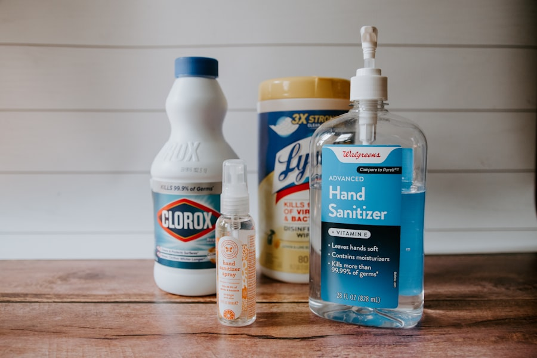

張凱傑院長為糖尿病與體重管理領域受訪專家，近期就「減重與肌肉流失」議題接受多家媒體採訪，獲 ETtoday、中央社、聯合報 等逾 6 家平台報導與轉載。
亦獲 LINE TODAY、PChome 等平台轉載。
「瘦瘦針」是腸泌素（incretin）類藥物的俗稱，模擬人體自然分泌的 GLP-1（與部分藥物的 GIP），從多個環節調節食慾與代謝——不是單純抑制食慾的減肥藥。
增加飽足感、降低飢餓感與對食物的渴望，自然減少進食量。
食物停留胃中較久，吃一點就飽、較不易過量。
促進胰島素、抑制升糖素，依血糖高低調節，平時較少低血糖。
臨床常同時觀察到血壓、血脂、脂肪肝指標改善，效益不只在體重。
凱程診所提供兩款每週一次的長效針劑，由醫師依您的體重、共病與目標選擇。
| 項目 | 猛健樂 Mounjaro | 週纖達 Wegovy |
|---|---|---|
| 主要成分 | Tirzepatide | Semaglutide |
| 作用機轉 | GIP + GLP-1 雙重腸泌素受體 | GLP-1 單一腸泌素受體 |
| 劑型 | 針劑 | 口服・針劑 |
| 施打頻率 | 每週一次・皮下注射 | 每週一次・皮下注射 |
| 適用年齡 | 18 歲以上 | 12 歲以上 |
| 半衰期 | 約 5 天 | 約 7 天 |
| 降體重 | 可達 >20% | 可達 >20% |
| 降血糖 | ✓ | ✓ |
| 其他實證／適應症 | 睡眠呼吸中止症 | 腎臟保護、心血管保護、膝關節炎改善、周邊動脈疾病保護 |
| 與人體 GLP-1 相似度 | 52% | 94% |
| 所附針頭數 | 0 個（診所可提供針頭） | 4 個 |
| 藥劑殘留 | 有殘劑 | 無殘劑 |
| 口服避孕藥交互作用 | 可能降低避孕藥效果 | 預計不會降低 |
| 常見副作用 | 初期腸胃不適 | 初期腸胃不適 |
| 注射部位反應 | 8.6% | 0.3% |
| 劑量規劃 | 低劑量起始、每約 4 週逐步調升，以降低腸胃不適；最終劑量由醫師依反應決定。 | |
資料來源：Semaglutide／Tirzepatide 藥品仿單（凱程診所院長整理）。各藥品「減重以外的適應症」須符合各自核准規範與醫師評估；個人成效與反應因人而異。
實際適應症與用藥仍須經醫師面診評估。
張凱傑院長在媒體專訪中特別提醒：減重不是只看體重計數字，「減掉脂肪、保留肌肉」才是真正健康的減重。
腹部、大腿外側或上臂皮下，每次輪換部位，避免同一處反覆施打。
每週固定一天施打、與三餐無關，可自行在家完成，漏打依說明補打。
從低劑量開始、每約 4 週調升一階，讓身體適應、減少噁心等不適。

噁心、嘔吐、腹瀉、便秘、腹脹、食慾下降。建議少量多餐、清淡飲食、避免油膩，多可改善。
瘦瘦針是輔助工具而非「打了就一勞永逸」。療程中同步建立飲食、運動與保肌習慣，能讓成果更穩定；是否減量或停藥、如何維持，會由醫師與您一起規劃。
多數人在數週內食慾與體重開始變化，明顯成效通常需數月並搭配生活調整。每個人反應不同，會在回診時依數據調整。
用於「減重」多屬自費療程。實際費用與療程方案請於評估時由診所說明。
使用極細的皮下注射筆針，多數人僅輕微感覺。診所會親自教學，確認您能安心自行操作。
想知道自己適不適合瘦瘦針？歡迎來電或加 LINE 預約，由張凱傑院長為您完整評估。